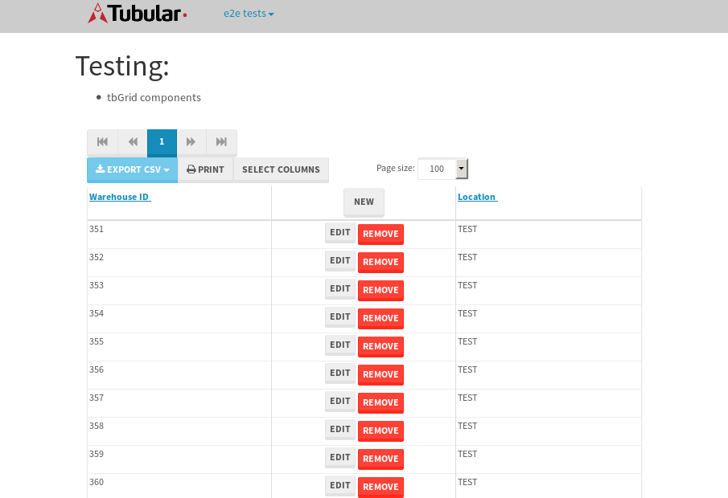

tbColumn.Grid Sorting - 175.65sTests: 5Skipped: 0Failures: 3 should sort data in ascending order then on descending order when sorting by Order Id column - 43.967sExpected '1' to be '500'.✗Expected '20' to be '481'.✗Tests passed: 50.00%should order data in ascending order when click-sorting an unsorted text column - 22.952sTests passed: 100.00%should order data in descending order when click-sorting an ascending-sorted text column - 42.951sExpected 'Advanced Technology Systems' to be 'Vesta'.✗Tests passed: 0.00%should order data in ascending order when click-sorting an unsorted date column - 22.88sTests passed: 100.00%should order data in descending order when click-sorting twice an unsorted date column - 42.893sExpected '12/30/2015' to match /1\/01\/2016/.✗Tests passed: 0.00%
tbEmptyForm - 2.028sTests: 3Skipped: 0Failures: 0 should have an empty required field - 0.431sTests passed: 100.00%should not be able to click on save - 0.021sTests passed: 100.00%should load default value for numeric field - 0.027sTests passed: 100.00%
Tubular Filters.tbColumnFilter - 95.303sTests: 12Skipped: 0Failures: 0 should cancel filtering when clicking outside filter-popover - 7.135sTests passed: 100.00%should disable Value text-input for "None" filter - 5.467sTests passed: 100.00%should disable apply button for "None" filter - 5.652sTests passed: 100.00%should decorate popover button when showing data is being filtered for its column - 11.054sTests passed: 100.00%should correctly filter data for the "Equals" filtering option - 7.487sTests passed: 100.00%should correctly filter data for the "Not Equals" filtering option - 7.29sTests passed: 100.00%should correctly filter data for the "Contains" filtering option - 7.339sTests passed: 100.00%should correctly filter data for the "Not Contains" filtering option - 7.2sTests passed: 100.00%should correctly filter data for the "Starts With" filtering option - 6.544sTests passed: 100.00%should correctly filter data for the "Not Starts With" filtering option - 6.127sTests passed: 100.00%should correctly filter data for the "Ends With" filtering option - 6.231sTests passed: 100.00%should correctly filter data for the "Not Ends With" filtering option - 6.697sTests passed: 100.00%
Tubular Filters.tbColumnDateTimeFilter - 125.387sTests: 12Skipped: 0Failures: 0 should cancel filtering when clicking outside filter-popover - 6.438sTests passed: 100.00%should disable Value text-input for "None" filter - 5.463sTests passed: 100.00%should disable apply button for "None" filter - 5.58sTests passed: 100.00%should clear filtering when clicking on Clean button - 16.33sTests passed: 100.00%should decorate popover button when showing data is being filtered for its column - 11.138sTests passed: 100.00%should correctly filter data for the "Equals" filtering option - 7.223sTests passed: 100.00%should correctly filter data for the "Not Equals" filtering option - 6.611sTests passed: 100.00%should correctly filter data for the "Between" filtering option - 11.077sTests passed: 100.00%should correctly filter data for the "Greater-or-equal" filtering option - 10.879sTests passed: 100.00%should correctly filter data for the "Greater" filtering option - 10.838sTests passed: 100.00%should correctly filter data for the "Less-or-equal" filtering option - 10.696sTests passed: 100.00%should correctly filter data for the "Less" filtering option - 10.912sTests passed: 100.00%
Tubular Filters.tbColumnOptionsFilter - 78.166sTests: 3Skipped: 0Failures: 0 should cancel filtering when clicking outside filter-popover - 8.177sTests passed: 100.00%should decorate popover button when showing data is being filtered for its column - 10.843sTests passed: 100.00%should filter column-elements in accordance to the selected filter when selecting a single option - 47.61sTests passed: 100.00%
Tubular Filters.tbTextSearch - 43.723sTests: 5Skipped: 0Failures: 0 min-chars is not set - 0.094sTests passed: 100.00%should filter data in searchable-column customer name to matching inputted text, starting from 3 characters - 5.914sTests passed: 100.00%should filter data in searchable-column shipper city to matching inputted text, starting from 3 characters - 10.962sTests passed: 100.00%should show clear button when there is inputted text only - 5.553sTests passed: 100.00%should clear filtering when clicking clear button - 15.406sTests passed: 100.00%
tbForm related components.tbCheckboxField - 6.483sTests: 2Skipped: 0Failures: 0 should save changes on "SAVE" - 2.15sTests passed: 100.00%should discard changes on "CANCEL" - 2.963sTests passed: 100.00%
tbForm related components.tbDropDownEditor - 7.48sTests: 5Skipped: 0Failures: 0 should set initial input value to the value of "value" attribute when defined - 0.796sTests passed: 100.00%should show the component name value in a label field when "showLabel" attribute is true - 0.719sTests passed: 100.00%should show a help field equal to this attribute, is present - 0.756sTests passed: 100.00%should submit modifications to item/server when clicking form "Save" - 2.996sTests passed: 100.00%should NOT submit modifications to item/server when clicking form "Cancel" - 1.597sTests passed: 100.00%
tbForm related components.tbTextArea - 11.718sTests: 7Skipped: 0Failures: 0 should set initial input value to the value of "value" attribute when defined - 1.076sTests passed: 100.00%should be invalidated when the number of chars is not in the range of "min" and "max" attributes - 2.3sTests passed: 100.00%should show the component name value in a label field when "showLabel" attribute is true - 0.832sTests passed: 100.00%should show a help field equal to this attribute, is present - 1.091sTests passed: 100.00%should require the field when the attribute "required" is true - 0.95sTests passed: 100.00%should submit modifications to item/server when clicking form "Save" - 3.134sTests passed: 100.00%should NOT submit modifications to item/server when clicking form "Cancel" - 1.57sTests passed: 100.00%
tbForm related components.tbDateEditor - 8.716sTests: 6Skipped: 0Failures: 0 should set initial date value to the value of "value" attribute when defined - 0.779sTests passed: 100.00%should be invalidated when the date is not in the range of "min" and "max" attributes - 1.295sTests passed: 100.00%should show the component name value in a label field when "showLabel" attribute is true - 0.752sTests passed: 100.00%should show a help field equal to this attribute, is present - 0.701sTests passed: 100.00%should submit modifications to item/server when clicking form "Save" - 2.007sTests passed: 100.00%should NOT submit modifications to item/server when clicking form "Cancel" - 2.297sTests passed: 100.00%
tbForm related components.tbTypeaheadEditor - 22.339sTests: 7Skipped: 0Failures: 0 should show an options list when there is an API-info/component entered-data - 1.951sTests passed: 100.00%should select the option clicked - 1.992sTests passed: 100.00%should show a "delete" button when an option/match is selected, and delete the option if button is clicked - 2.188sTests passed: 100.00%should show a label value equal to the component name when "showLabel" attribute is true - 1.325sTests passed: 100.00%should require a value when "require" attribute is true - 6.353sTests passed: 100.00%should submit modifications to item/server when clicking form "Save" - 3.957sTests passed: 100.00%should NOT submit modifications to item/server when clicking form "Cancel" - 1.534sTests passed: 100.00%
tbForm related components.tbSimpleEditor - 11.435sTests: 9Skipped: 0Failures: 0 should set initial input value to the value of "value" attribute when defined - 0.79sTests passed: 100.00%should be invalidated when the number of chars is not in the range of "min" and "max" attributes - 1.232sTests passed: 100.00%should show the component name value in a label field when "showLabel" attribute is true - 0.692sTests passed: 100.00%should set input placeholder to the value of "placeholder" attribute - 0.956sTests passed: 100.00%should validate the control using the "regex" attribute, if present - 0.806sTests passed: 100.00%should show a help field equal to this attribute, is present - 0.691sTests passed: 100.00%should require the field when the attribute "required" is true - 0.911sTests passed: 100.00%should submit modifications to item/server when clicking form "Save" - 3.569sTests passed: 100.00%should NOT submit modifications to item/server when clicking form "Cancel" - 1.129sTests passed: 100.00%
tbForm related components.tbNumericEditor - 11.898sTests: 7Skipped: 0Failures: 0 should set initial component value to the value of "value" attribute when defined - 0.682sTests passed: 100.00%should be invalidated when the entered number is not in the range of "min" and "max" attributes - 1.229sTests passed: 100.00%should show the component name value in a label field when "showLabel" attribute is true - 0.922sTests passed: 100.00%should show a help field equal to this attribute, is present - 1.047sTests passed: 100.00%should require the field when the attribute "required" is true - 1.123sTests passed: 100.00%should submit modifications to item/server when clicking form "Save" - 4.744sTests passed: 100.00%should NOT submit modifications to item/server when clicking form "Cancel" - 1.49sTests passed: 100.00%
tbForm Connection Error NoModelKey - 2.912sTests: 1Skipped: 0Failures: 0 tbForm connection error functionality - 0.006sTests passed: 100.00%
tbForm Connection Error NoServerUrl - 1.93sTests: 1Skipped: 0Failures: 0 tbForm connection error functionality - 0.002sTests passed: 100.00%
tbGridComponents - 27.781sTests: 6Skipped: 0Failures: 1 should add item with newRow method - 3.302sTests passed: 100.00%should add item with newRow method and cancel action - 0.36sTests passed: 100.00%should update item with tbSaveButton - 1.305sTests passed: 100.00%should NOT update item on cancel Update action - 0.468sTests passed: 100.00%should remove item with tbRemoveButton - 20.363sExpected 10 not to be 10, 'should remove the row from the table'.✗Tests passed: 50.00%should NOT remove item on cancel Remove action - 0.557sTests passed: 100.00%
tbGridPager.navigation buttons - 2.942sTests: 1Skipped: 0Failures: 0 should perform no action when clicking on the numbered navigation button corresponding to the current-showing results page - 0.968sTests passed: 100.00%
tbGridPager.navigation buttons.first/non-last results page related functionality - 0.737sTests: 2Skipped: 0Failures: 0 should disable "first" and "previous" navigation buttons when in first results page - 0.099sTests passed: 100.00%should enable "last" and "next" navigation buttons when in a results page other than last - 0.638sTests passed: 100.00%
tbGridPager.navigation buttons.last/non-first results page related functionality - 1.236sTests: 2Skipped: 0Failures: 0 should disable "last" and "next" navigation buttons when in last results page - 0.627sTests passed: 100.00%should enable "first" and "previous" navigation buttons when in a results page other than first - 0.609sTests passed: 100.00%
tbGridPager.page navigation - 5.937sTests: 5Skipped: 0Failures: 0 should go to next results page when clicking on next navigation button - 2.545sTests passed: 100.00%should go to previous results page when clicking on previous navigation button - 1.457sTests passed: 100.00%should go to last results page when clicking on last navigation button - 0.697sTests passed: 100.00%should go to first results page when clicking on first navigation button - 0.656sTests passed: 100.00%should go to corresponding results page when clicking on a numbered navigation button - 0.582sTests passed: 100.00%
tbGridPagerInfo - 4.111sTests: 2Skipped: 0Failures: 0 should show text in accordance to numbered of filter rows and current results-page - 1.853sTests passed: 100.00%should show count in footer - 0.021sTests passed: 100.00%
tbPageSizeSelctor - 20.052sTests: 4Skipped: 0Failures: 0 should filter up to 10 data rows per page when selecting a page size of "10" - 4.174sTests passed: 100.00%should filter up to 20 data rows per page when selecting a page size of "20" - 2.825sTests passed: 100.00%should filter up to 50 data rows per page when selecting a page size of "50" - 2.999sTests passed: 100.00%should filter up to 100 data rows per page when selecting a page size of "100" - 8.544sTests passed: 100.00%
tbSingleForm - 12.448sTests: 8Skipped: 1Failures: 1 should load correct info - 0.001s***Skipped***Tests passed: 0%should change customer name - 1.772sTests passed: 100.00%should save it - 1.925sExpected '' to be 'Saved'.✗Tests passed: 50.00%should clear the inputs - 1.762sTests passed: 100.00%should update - 1.889sTests passed: 100.00%should reset editor - 1.732sTests passed: 100.00%should not save if not Changes - 1.672sTests passed: 100.00%should not be able to click on save - 1.694sTests passed: 100.00%


{kind=link}